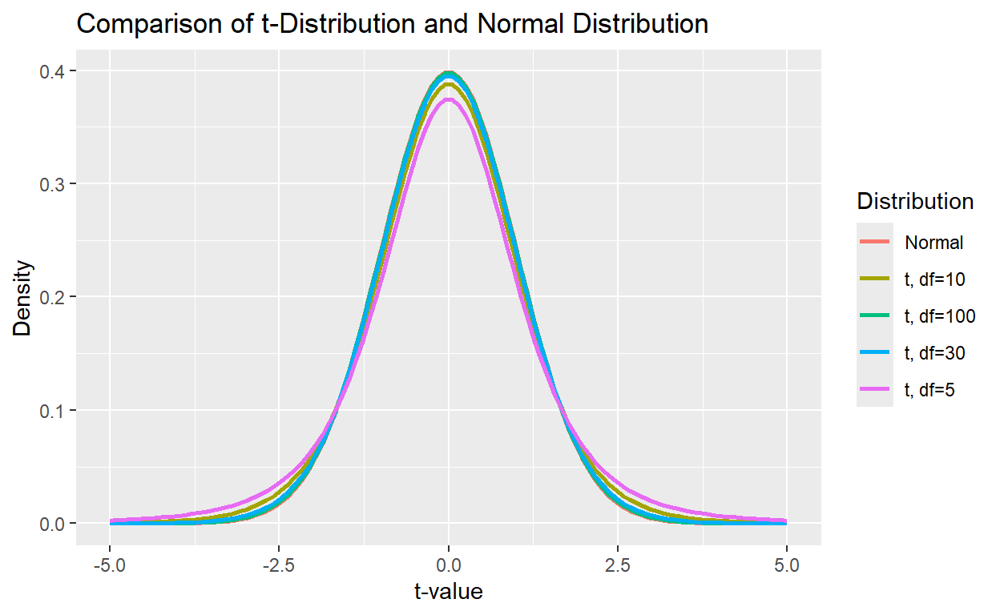
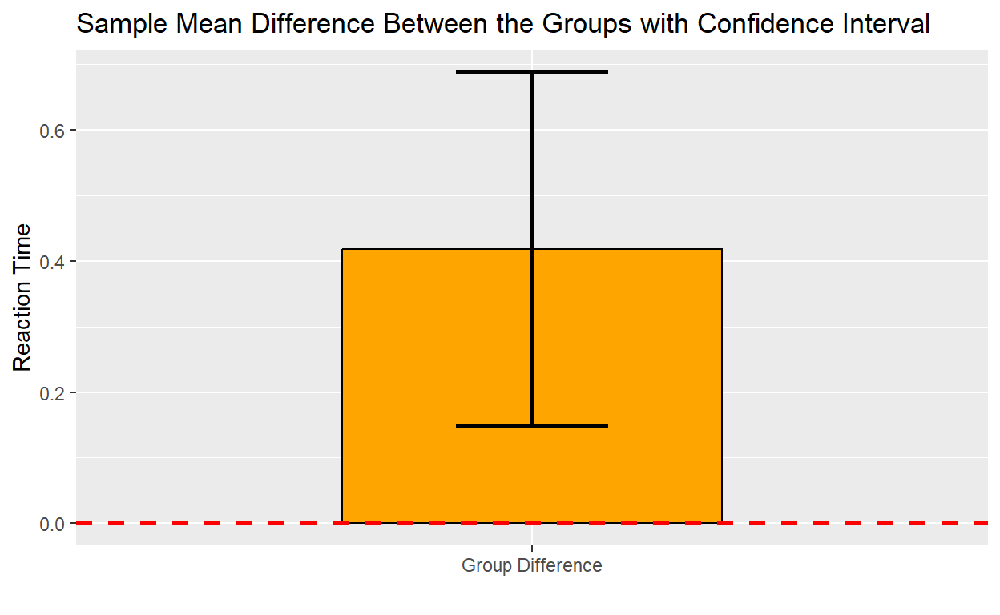

מבוא - התפלגות t
בקורס הסטטיסטיקה למדתם על מבחני t ועל הרקע התיאורטי של שמאחוריו. בשיעור זה אנחנו נלמד איך לבצע מבחני t על נתונים אמיתיים בR ולהציג אותם. כמו שבוודאי ידוע לכם, מבחן t מתבסס על השוואת נתוני המדגם להתפלגות הt.
התפלגות הt היא התפלגות התסתברותית המשתמשת לבדיקת השערות כאשר סטיית התקן של האוכלוסיה הנבדקת איננה ידועה. צורת ההתפלגות של התפלגות זאת דומה להתפלגות נורמלית אך בעלת “זנבות כבדים” אשר משקפים את חוסר הוודאות שנגרמת מגודל המדגם. כך שככל שגודל המדגם גדול יותר, כך צורת ההתפלגות מתקרבת להתפלגות נורמלית.
בואו נמחיש את ההתפלגות:
# לצורך ההצגה נדמה נתונים
x <- seq(-5, 5, length.out = 100)
# נשווה התפלגות במדגם של 10 משתתפים להתפלגות נורמלית
samp_size = 10
# שימו לב, דרגות החופש הן גודל המדגם פחות 1
# נבנה את ההתפלגויות בטבלה
dist_data <- data.frame(
x = rep(x, 2),
y = c(
dt(x, df = samp_size-1),
dnorm(x)
),
Distribution = factor(rep(c("T", "Normal"), each = length(x)))
)
# כעת נצייר את ההתפלגות
ggplot(dist_data, aes(x = x, y = y, color = Distribution)) +
geom_line(linewidth = 1) +
labs(
title = "Comparison of t-Distribution and Normal Distribution",
x = "t-value",
y = "Density",
color = "Distribution"
)בקוד למעלה בעצם דימינו את התפלגות הt למשתנה x שהינו בעל טווח ערכים
מוגדר.
את מעטפת ההתפלגות ייצרנו באמצעות הפונקציה dt() אשר מקבלת את
x ואת דרגות החופש.
תרגיל
הקוד מטה מציג את ההתפלגות עם דרגות חופש של 5, 10, 30 ו100.
# לצורך ההצגה נדמה נתונים
x <- seq(-5, 5, length.out = 100)
# נשווה התפלגות במדגם של 10 משתתפים להתפלגות נורמלית
samp_size = c(5, 10, 30, 100)
# שימו לב, דרגות החופש הן גודל המדגם פחות 1
# נבנה את ההתפלגויות בטבלה
dist_data <- data.frame(
x = rep(x, length(samp_size)+1),
y = c(
dt(x, df = samp_size[1]-1),
dt(x, df = samp_size[2]-1),
dt(x, df = samp_size[3]-1),
dt(x, df = samp_size[4]-1),
dnorm(x)
),
Distribution = factor(rep(c("t, df=5", "t, df=10", "t, df=30", "t, df=100", "Normal"), each = length(x)))
)
# כעת נצייר את ההתפלגות
ggplot(dist_data, aes(x = x, y = y, color = Distribution)) +
geom_line(linewidth = 1) +
labs(
title = "Comparison of t-Distribution and Normal Distribution",
x = "t-value",
y = "Density",
color = "Distribution"
)
כעת כשהצגנו את התפלגות t אנחנו יכולים לראות שכאשר גודל מדגם שווה ל30
ומעלה ההתפלגות בעצם דומה מאוד להתפלגות נורמלית.
עכשיו כשיש לנו את ההתפלגות נוכל להשתמש בה כדי לבצע את מבחני הt שלמדנו
עליהם בקורס סטטיסטיקה. כידוע לכם מבחן t משווה ממוצע של המדגם להתפלגות
הt. כך שתוצאת המבחן תלויה במספר פרמטרים:
1. דרגות החופש (אשר מגדירות את צורת ההתפלגות)
2. רמת המובהקות (אלפא)
3. סוג ההשערה (חד או דו זנבית)
כלומר על בסיס גורמים אלה נוכל לחשב מהו ערך הt הקריטי
שנצטרך לקבל במדגם כדי לקבל תוצאה מובהקת.
נוכל לחשב את הערך הקריטי באמצעות הפונקציה qt() אשר מחשבת
מהו הערך המתכתב עם אחוז מסוים של ההתפלגות ודרגות החופש שלה. למשל:
# נרצה לחשב מה הוא הערך הקריטי
alpha <- 0.05 # הצבנו ערך קריטי של 5%
df <- 10 # דרגות החופש
critical_t <- qt(1 - alpha, df)
# הצבנו את ההופכי של רמת המובהקות שכן נרצה לחשב את הערך הקריטי שמתכתב איתו
critical_t## [1] 1.812461# נוסיף את הערך הקריטי לאיור ההתפלגות
# קודם כל נדמה שוב נתונים
x <- seq(-4, 4, length.out = 1000)
y <- dt(x, df = df)
# נאייר קודם את ההתפלגות עצמה
ggplot(data.frame(x, y), aes(x, y)) +
geom_line(color = "blue", linewidth = 1) +
# נוסיף את הערך הקריטי להתפלגות באמצעות קו אונכי
geom_vline(xintercept = c(critical_t), color = "red", linetype = "dashed", linewidth = 1) + # עיצוב
labs(
title = "t-Distribution with Critical Values (df = 10)",
x = "t-value",
y = "Density"
) +
theme_minimal()לפי הדוגמה למעלה, אם במדגם שלנו היה מתקבל ערך גבוהה מערך הt הקריטי, אפשר היה להגיד שתחת רמת הבטחון הנוכחית אפשר לדחות את השערת ה0.
שימו לב, הדוגמה למעלה מדגימה לנו איך נראית ההתפלגות עם הערך הקריטי עבור רמת מובהקות של 5% והשערה חד זנבית חיובית. כדי לשנות את רמת המובהקות יש פשוט לערוך את המשתנה שנקרא אלפא. אבל כדי להתחשב בהשערה דו זנבית יש צורך בעצם לחלק את ההיגד: (1-alpha) ב2, שכן עכשיו רמת המבוהקות בעצם מתחלקת בין שתי קצוות העקומה.
תרגיל
בואו נחשב את הערך הקריטי עבור השערה דו זנבית ורמת מובהקות של 1%.
רמז - התבססו על הקוד של הדוגמה למעלה ושימו לב שעכשיו יש לאייר שני קווים
(כבר בדוגמה יש שימוש בוקטור אז אפשר פשוט להוסיף לו עוד ערך).
# הגדירו את רמת הבטחון
alpha <-
# הגדירו את דרגות החופש
df <-
# חשבו את הערכים הקריטים
critical_t <- c()
## אין צורך לערוך את הקוד מטה
# נדמה את הנתונים
x <- seq(-4, 4, length.out = 1000)
y <- dt(x, df = df)
# איור
ggplot(data.frame(x, y), aes(x, y)) +
geom_line(color = "blue", linewidth = 1) +
# נוסיף את הערך הקריטי להתפלגות באמצעות קו אונכי
geom_vline(xintercept = critical_t, color = "red", linetype = "dashed", linewidth = 1) + # עיצוב
labs(
title = "t-Distribution with Critical Values (df = 10)",
x = "t-value",
y = "Density"
) +
theme_minimal()
critical_talpha <- 0.01
df <- 10
critical_t <- c(-qt(1 - alpha/2, df), qt(1 - alpha/2, df))
# נוסיף את הערך הקריטי לאיור ההתפלגות
# קודם כל נדמה שוב נתונים
x <- seq(-4, 4, length.out = 1000)
y <- dt(x, df = df)
# נאייר קודם את ההתפלגות עצמה
ggplot(data.frame(x, y), aes(x, y)) +
geom_line(color = "blue", linewidth = 1) +
# נוסיף את הערך הקריטי להתפלגות באמצעות קו אונכי
geom_vline(xintercept = critical_t, color = "red", linetype = "dashed", linewidth = 1) + # עיצוב
labs(
title = "t-Distribution with Critical Values (df = 10)",
x = "t-value",
y = "Density"
) +
theme_minimal()מעולה, אפשר להבין בכך שככל שאלפא מקבל ערך קטן יותר נידרש לערך קריטי
קיצוני יותר.
עכשיו נעבור לביצוע מבחני t בפועל.
מבוא - מבחן t
כדי לבצע מבחן t אנחנו נעבוד עם הפונקציה t.test. אנחנו
נכיר את הארגומנטים שהיא מקבלת תוך כדי העבודה על מבחני הt השונים.
יתכן והרשימת הארגומנטים למטה תהיה קצת מחוץ לקונטקסט, היא נועדה לספק סדר
כאשר כל הארגומנטים נמצאים במקום אחד, הארגומנטים השונים יוסברו בפירוט רב
יותר אם יהיה צורך.
x - הנתונים, חייבים להכניס לפחות וקטור אחד של נתונים
לפונקציה כדי לקבל תוצאה.
y - וקטור נוסף של נתונים במידה וישנן שתי קבוצות.
alternative - סוג ההשערה אם לא נפרט את סוג ההשערה יעשה
שימוש בברירת המחדל - השערה דו זנבית (“two.sided”). כדי לבצע מבחן חד זנבי
חיובי יש להזין (“greater”) ועבור מבחן חד זנבי שלילי יש לפרט
(“less”).
mu - ממוצע ההשוואה עבוד מבחן למדגם בודד.
conf.level - רמת בטחון, ארגומנט זה ישמש בעיקר לחישוב
רווח בר סמך.
ארגומנטים הרלוונטיים רק למבחן עם שני מדגמים:
paired - האם לבצע מבחן למדגמים מזווגים או מדגמים בלתי
תלויים? יש להזין באגומנט זה ערך לוגי (כלומר TRUE אם מעוניינים לבצע מבחן
מזווג).
var.equal - האם ניתן להניח שוויון שונויות בין שני
מדגמים.
היכרות עם הנתונים
ביחידה זאת נעבוד עם מבחן קוגניטיבי שנקרא מבחן stroop. תלמדו על מבחן
זה עוד בקורסים אחרים, אבל בגדול זהו מבחן המבדיל בין תהליכים נשלטים
לתהליכים אוטומטיים.
בגרסה המוכרת שלו, מציגים למשתתפים שמות של צבעים הצבועים בצבע. הצבע יכול
להיות תואם למילה הכתובה או לא תואם. בתנאי
התואם קל יותר למשתתפים לעבד את המילה ואילו בתנאי הלא תואם צריך לגייס
תהליכים נשלטים ולכן זמן התגובה של המשתתפים לרוב גדול יותר בצורה משמעותית
בתנאי הלא תואם. רוצים לדעת עוד על ההיסטוריה של מבחן הסטרופ? לחצו כאן: Stroop
בהדגמות אנחנו נעבוד עם נתונים מדומים, אבל אל דאגה בתרגיל המסכם תוכלו
להתנסות גם עם נתונים ממחקר אמיתי.
מבחן t למדגם בודד
ההשערה הפשוטה ביותר שאנחנו יכולים לבחון באמצעות מבחן t היא השוואה של ממוצע המדגם לתוחלת ידועה. למשל בהקשר של מטלת הסטרופ, נניח שהחלטנו להריץ גרסה של המטלה בעברית ונרצה לבדוק האם זמן התגובה הממוצע בתנאי התואם שונה מתוחלת זמן התגובה המוכר בספרות לתנאי זה, אשר מבוססת ברובה על המטלה באנגלית.
ההשערה שלנו היא שעיבוד אוטומטי בעברית עשוי להיות שונה מעיבוד באנגלית. נניח לצורך הדוגמה שתוחלת זמן התגובה המוכרת בספרות הוא של 2 שניות (זאת הנחה פשטנית לטובת הדוגמה בלבד) ולכן השערת האפס היא שממוצע המדגם שלנו שווה ל2.
בהתאם לכך ההשערה האלטרנטיבית היא שזמן התגובה במחקר הנוכחי שונה מ2.
לטובת דוגמה זאת נשתמש ברמת מובהקות הסטנדרטית של 0.05.
לצורך זה נשתמש בארגומנט mu שניתן להציב בפונקציה שתבצע את
המבחן. ארגומנט זה מפרט מה היא תוחלת ה”אוכלוסיה” אליה רוצים להשוות את
נתוני המדגם. כמובן שבמקרה זה אין לנו גישה להתפלגות המלאה של האוכלוסיה
ולכן אנחנו משתמשים במבחן t.
# קודם כל נדמה את נתוני המדגם
# התפקיד של שורה זאת היא לייצא את אותן תוצאות בכל פעם
set.seed(123)
# נקבע את הפרמטרים של המדגם:
sample_n <- 50 # מספר המשתתפים
sample_rt <- 1.8 # זמן התגובה הממוצע של הקבוצה
sample_sd <- 0.3 # סטיית התקן של הקבוצה
# נדמה מדגם בעל התפלגות נורמלית
reaction_time <- rnorm(sample_n, mean = sample_rt, sd = sample_sd)
# נבצע את המבחן עם הצבה של התוחלת המשוער
sig_level <- 0.05
t_test_result <- t.test(reaction_time, mu = 2)
# עכשיו נוכל לגשת לסטטיסטי שחושב בתוצאה
# יש כמה דרכים
t_test_result["statistic"]## $statistic
## t
## -4.828729t_test_result$statistic## t
## -4.828729# לדרגות החופש
t_test_result["parameter"]## $parameter
## df
## 49t_test_result$parameter## df
## 49# p value
t_test_result["p.value"]## $p.value
## [1] 1.388299e-05t_test_result$p.value## [1] 1.388299e-05# באופן כתיבה זה גם הכותרת מודפסת
# כדי להדפיס רק את הערך צריך לשנות את סוג הערך למספרי
as.numeric(t_test_result["p.value"])## [1] 1.388299e-05# רווח סמך
t_test_result["conf.int"]## $conf.int
## [1] 1.731382 1.889260
## attr(,"conf.level")
## [1] 0.95# ואפשר גם להדפיס את התוצאה המלאה
print(t_test_result)##
## One Sample t-test
##
## data: reaction_time
## t = -4.8287, df = 49, p-value = 1.388e-05
## alternative hypothesis: true mean is not equal to 2
## 95 percent confidence interval:
## 1.731382 1.889260
## sample estimates:
## mean of x
## 1.810321פלט המבחן
מעולה, הרצנו את המבחן ואת התוצאה שמרנו במשתנה. כעת נוכל לעבור על
הפלט. בשורה הראשונה מפורט לנו באיזה נתונים השתמשנו. בשורה שמתחתיה נוכל
למצוא את תוצאות המבחן עצמו, אנחנו מקבלים את ערך הt של המדגם (t) את כמות
דרגות החופש (df) ואת ערך הp המחושב את ערך ה.
איך נדע האם התקבלה תוצאה מובהקת?
הדרך הקלה ביותר תהיה להשוות את ערך הp לרמת המובהקות שבחרנו למבחן זה
(למשל 0.05).
לא ברור לכם איזה ערך קיבל הp value במבחן הנוכחי? תקבלו הסבר מלא בחלק
הבא.
כמו כן, מתוארת לנו גם ההשערה האלטרנטיבית, המתכתבת עם השערת האפס -
שהממוצע במדגם (כמו התוחלת באוכלוסיה המשוערת) הוא 2 שניות. מתיאור זה אפשר
גם להסיק האם המבחן היה דו זנבי או חד זנבי, שימו לב איך מתוארת השערת האפס
במבחנים הבאים.
לאחר מכן מתואר לנו רווח הסמך (confidence interval), הערך התחתון שלו מוצג
בצד שמאל והערך העליון בצד ימין.
לבסוף, מוצג לנו הסטטיסטי, ממוצע המדגם.
מספרים מקוצרים
שימו לב לפורמט, כאשר ערך הp ממש ממש קטן הוא יוצג בפורמט מקוצר, תוכלו
לדעת שזה קרה כשהאות e תוצג בתוך המספר. למשל בדוגמה למעלה קיבלנו שערך הp
הוא 1.388e-05. זוהי בעצם פעולה חשבונית שמקצרת לנו את ההצגה של המספר.
המשמעות של e ואחריו מספר שמתחיל ב- היא בעצם חלוקה של המספר ב1 וכמות
האפסים הרשומה לאחר ה-. למקרה שזה לא היה מספיק ברור, את ערך הp שקיבלנו
בניתוח זה אפשר היה לכתוב גם כך:
1.388/100000
כלומר, אתם מבינים שמדובר במספר קטן מאוד, שאין ספק שהוא קטן מ0.05.
חשוב לדעת! כמו שהתוכנה משתמשת בe כדי לקצר את התצוגה של מספרים ממש קטנים
(כלומר, בעלי הרבה אפסים לאחר הנקודה העשרונית) היא גם יכולה לשמש את
התוכנה כדי לקצר מספרים מאוד גדולים. כך שלמשל: 1.388e05 שווה למכפלה
ב100000 ולא לחלוקה בו. (כלומר היא 138800).
ועכשיו נוסיף איור שמשווה את נתוני המדגם למידע הקיים בספרות.
# הצגת הנתונים
library(ggplot2)
stroop_data <- data.frame(Condition = "Reaction Time", Reaction_Time = reaction_time)
sample_mean <- mean(reaction_time)
ci_lower <- t_test_result$conf.int[1]
ci_upper <- t_test_result$conf.int[2]
mu = 2
plot_data <- data.frame(
Group = "Sample",
Mean = sample_mean,
CI_Lower = ci_lower,
CI_Upper = ci_upper
)
ggplot(plot_data, aes(x = Group, y = Mean)) +
geom_bar(stat = "identity", fill = "skyblue", color = "black", width = 0.5) + # Bar with border
geom_errorbar(aes(ymin = CI_Lower, ymax = CI_Upper), width = 0.2, linewidth = 1) + # Error bars
geom_hline(yintercept = mu, linetype = "dashed", color = "red", linewidth = 1) +
geom_hline(yintercept = 0, color = "black", linewidth = 1) +
geom_vline(xintercept = 0.5, color = "black", linewidth = 1) + # Y-axis line at 0
labs(
title = "Sample Mean with Confidence Interval",
x = "",
y = "Reaction Time")איור זה מציג את הממוצע (כחול) של ממוצע זמני התגובה במדגם. הממוצע
המוכר מהספרות מסומן על ידי הקו האדום. רווח הסמך מסומן סביב הממוצע
בשחור.
ניתן לראות שהממוצע משמעותית נמוך יותר מהתוחלת אליה השווינו את הנתונים
וכי ערך זה לגמרי מחוץ לרווח הסמך. זה האמנם לא מעיד על כך שאין כלל
משתתפים שזמן התגובה שלהם גדול מ2, אך שממוצע הקבוצה ברמת בטחון של 95%
מתחת לערך זה.
תרגיל
בתיבת הקוד למטה דימינו לכם נתונים של זמני התגובה בטריאלים הלא תואמים.
בניגוד להגדמה שבציענו על עיבוד אוטומטי, לחוקר שהריץ את המחקר הייתה השערה
יותר מנומקת לגבי עיבוד נשלט בעברית לעומת אנגלית.
בספרות בתחום מוכר כי זמן התגובה הממוצע בתנאי הלא תואם הוא 2.5 שניות.
החוקר טען שכיוון שהמילים בעברית קצרות יותר, הוא צפוי להיות קטן יותר
בעברית. ולכן הוא כעת מבקש לבצע מבחן t עם השערה חד זנבית שלישית לממוצע
הידוע באוכלוסיה. לסיום הדפיסו השוואה בין רמת המובהקות לערך הp.
רמז - בעת הדפסת ההשוואה זכרו להשתמש בסוגריים כפולים.
# קודם כל נדמה את נתוני המדגם
set.seed(123)
# נקבע את הפרמטרים של המדגם:
sample_n <- 50 # מספר המשתתפים
sample_rt <- 2.2 # זמן התגובה הממוצע של הקבוצה
sample_sd <- 0.4 # סטיית התקן של הקבוצה
# נדמה מדגם בעל התפלגות נורמלית
reaction_time <- rnorm(sample_n, mean = sample_rt, sd = sample_sd)
# בצעו את המבחן כאן
sig_level <- 0.05
t_test_result <-
# הדפיסו את ההשוואה# קודם כל נדמה את נתוני המדגם
set.seed(123)
# נקבע את הפרמטרים של המדגם:
sample_n <- 50 # מספר המשתתפים
sample_rt <- 2.2 # זמן התגובה הממוצע של הקבוצה
sample_sd <- 0.4 # סטיית התקן של הקבוצה
# נדמה מדגם בעל התפלגות נורמלית
reaction_time <- rnorm(sample_n, mean = sample_rt, sd = sample_sd)
# בצעו את המבחן כאן
sig_level <- 0.05
t_test_result <- t.test(reaction_time, mu = 2.5, alternative = "less")
# הדפיסו את ההשוואה
as.numeric(t_test_result["p.value"]) < sig_levelמבחן t למדגמים בלתי תלויים
ההשוואה של תוצאת המדגם לממוצע ידוע באוכלוסיה רלוונטית בפועל במספר קטן
של מקרים. שכן לרוב אין לנו ממוצע ידוע באוכלוסיה. תרחיש יותר נפוץ הוא
השוואה בין שתי מדגמים.
אם נמשיך עם הדוגמה הקודמת, יותר סביר שהחוקר באוניברסיטה העברית יעבוד
בשיתוף פעולה עם חוקר אחר בארה”ב אשר הריצו מחקר דומה באוכלוסיה דוברת
אנגלית וההשוואה תתבצע בין נתוני המדגם המקומי לנתוני המדגם של דוברי
האנגלית.
במקרה זה נשווה מדגם של מטלת הסטרופ בעברית למדגם של המטלה באנגלית. הפעם,
נוכל להשתמש בשערה שממוצע זמן התגובה במדגם באנגלית יהיה גבוה מאשר בעברית,
שכן כבר יש לנו בסיס לשער השערה כזאת.
# קודם כל נדמה את נתוני המדגם
set.seed(234)
# נקבע את הפרמטרים של המדגם:
# מספר המשתתפים
sample_n <- 50
# נדמה את זמני התגובה של כל קבוצה
sample_rt_heb <- 1.8
sample_rt_eng <- 2
# סטיית התקן של הקבוצה בדוגמה זאת נניח שוויון שונויות
sample_sd <- 0.3
# נדמה שני מדגמים בעלי התפלגות נורמלית
reaction_time_heb <- rnorm(sample_n, mean = sample_rt_heb, sd = sample_sd)
reaction_time_eng <- rnorm(sample_n, mean = sample_rt_eng, sd = sample_sd)
# ועכשיו נשווה בין שתי הדגימות
# כאשר ההשערה היא חד זנבית כיוון ההשוואה הוא תמיד בין הוקטור הראשון לשני
# כלומר אם ההשערה היא שאנגלית גדול מעברית והמדגם באנגלית הוא ראשון ההשערה תהיה גדול יותר
t_test_result <- t.test(x = reaction_time_eng, y = reaction_time_heb, alternative = "greater", paired = FALSE)
# נדפיס את התוצאה המלאה
print(t_test_result)##
## Welch Two Sample t-test
##
## data: reaction_time_eng and reaction_time_heb
## t = 4.3463, df = 97.237, p-value = 1.704e-05
## alternative hypothesis: true difference in means is greater than 0
## 95 percent confidence interval:
## 0.1484623 Inf
## sample estimates:
## mean of x mean of y
## 2.021372 1.781107שוב קיבלנו תוצאה מובהקת. אבל יש כמה נקודות חדשות ששכדאי לשים לב אליהן
בפלט.
ההשערה שונה, עכשיו ההשערה מתייחסת להבדל בין הקבוצות.
כמו כן, רווח הסמך מקבל ערך אחד בלבד כאשר ההשערה היא חד זנבית (במקרה של
השערה חיובית הוא אנחנו מקבלים רק את הערך התחתון) הסיבה לכך היא שהקצה
העליון לא רלוונטי במקרה זה, אנחנו בעצם בוחנים האם הווח הסמך כולל את אפס
בקצהו התחתון או לא.
# נייצר סיכום של הנתונים
means <- c(mean(reaction_time_eng), mean(reaction_time_heb))
sds <- c(sd(reaction_time_eng), sd(reaction_time_heb))
# נציג את הנתונים
plot_data <- data.frame(
Condition = c("English", "Hebrew"),
Mean = means,
SD = sds
)
ggplot(plot_data, aes(x = Condition, y = Mean)) +
geom_bar(stat = "identity", fill = "pink", color = "black", width = 0.6) +
geom_errorbar(aes(ymin = Mean - SD, ymax = Mean + SD), width = 0.2) +
labs(
title = "Reaction Times by Condition",
subtitle = "Error bars represent standard deviation",
x = "Stroop Language",
y = "Reaction Time"
)האיור ממחיש לנו היטב את ממוצעי הקבוצות ואת השונות בתוך הקבוצות, אבל הוא לא מדגים ממש את האפקט שמבחן הt בוחן. כדי להציג את מה שהמבחן ממש בודק נצטרך להסתכל על ההפרשים בין הקבוצות.
sample_mean_diff <- mean(reaction_time_eng) - mean(reaction_time_heb)
ci_lower <- t_test_result$conf.int[1]
# נדמה קצה עליון סימטרי לרווח הסמך
ci_upper <- sample_mean_diff + (sample_mean_diff-t_test_result$conf.int[1])
# הפעם הערך אליו נשווה את ממוצע ההפרשים הוא 0
# שכן השערת האפס היא שאין הבדל
mu = 0
plot_data <- data.frame(
Group = "Group Difference",
Mean = sample_mean_diff,
CI_Lower = ci_lower,
CI_Upper = ci_upper
)
ggplot(plot_data, aes(x = Group, y = Mean)) +
geom_bar(stat = "identity", fill = "pink", color = "black", width = 0.5) + # Bar with border
geom_errorbar(aes(ymin = CI_Lower, ymax = CI_Upper), width = 0.2, linewidth = 1) + # Error bars
geom_hline(yintercept = mu, linetype = "dashed", color = "red", linewidth = 1) +
labs(
title = "Sample Mean Difference Between the Groups with Confidence Interval",
x = "Differnce",
y = "Reaction Time")עכשיו אנחנו יכולים לראות בבירור שממוצע ההפרשים נמצא הרבה מעל האפס, וכי הוא אינו מוכל במרווח הבטחון. עכשיו האיור מדגים את האפקט היטב.
תרגיל
החוקר התלהב מההצלחה המסחררת של שיתוף הפעולה עם המעבדה בארה”ב לגבי עיבוד
אוטומטי. הוא החליט להמשיך בקו המחקר הזה וגייס מעבדה נוספת באנגליה. במחקר
האנגלי התקבל ממוצע מדגם זהה למדגם האמריקאי (באופן מקרי). אך סטיית התקן
במדגם זה שונה מאוד. בתיבה מטה כבר נתון לכם הקוד בו השתמשנו קודם. ערכו בו
את הסימולציה כך שסטיית התקן של המבחן באנגלית היא 2.8. ובצעו את מבחן הt
והשוו את ערך הp לרמת מובהקות של 0.05.
# קודם כל נדמה את נתוני המדגם
set.seed(234)
# נקבע את הפרמטרים של המדגם
sample_n <- 50
# נדמה את זמני התגובה של כל קבוצה
sample_rt_heb <- 1.8
sample_rt_eng <- 2
# סטיית התקן של הקבוצה בדוגמה זאת נניח שוויון שונויות
sample_sd_heb <- 0.3
sample_sd_eng <- 0.3
# נדמה שני מדגמים בעלי התפלגות נורמלית
reaction_time_heb <- rnorm(sample_n, mean = sample_rt_heb, sd = sample_sd_heb)
reaction_time_eng_uk <- rnorm(sample_n, mean = sample_rt_eng, sd = sample_sd_eng)
# בצעו את המבחן
# רמז - שימו לב, האם ניתן להניח שוויון שונויות?
t_test_result_uk <- t.test(x = , y = , alternative = , var.equal=, paired = )
# לסיום הדפיסו את ההשוואה לרמת המובהקות# קודם כל נדמה את נתוני המדגם
set.seed(234)
# נקבע את הפרמטרים של המדגם
sample_n <- 50
# נדמה את זמני התגובה של כל קבוצה
sample_rt_heb <- 1.8
sample_rt_eng <- 2
# סטיית התקן של הקבוצה בדוגמה זאת נניח שוויון שונויות
sample_sd_heb <- 0.3
sample_sd_eng <- 2.8
# נדמה שני מדגמים בעלי התפלגות נורמלית
reaction_time_heb <- rnorm(sample_n, mean = sample_rt_heb, sd = sample_sd_heb)
reaction_time_eng_uk <- rnorm(sample_n, mean = sample_rt_eng, sd = sample_sd_eng)
# בצעו את המבחן
t_test_result <- t.test(x = reaction_time_eng, y = reaction_time_heb, alternative = "greater", var.equal = FALSE, paired = FALSE)
# לסיום הדפיסו את התוצאה
as.numeric(t_test_result["p_value"]) < 0.05הפעם למרות שממוצע המדגם היה זהה קיבלנו תוצאה שאיננה מובהקת. בואו נציג את הנתונים כדי להבין למה.
set.seed(234)
# נקבע את הפרמטרים של המדגם
sample_n <- 50
# נדמה את זמני התגובה של כל קבוצה
sample_rt_heb <- 1.8
sample_rt_eng <- 2
# סטיית התקן של הקבוצה בדוגמה זאת נניח שוויון שונויות
sample_sd_heb <- 0.3
sample_sd_eng <- 2.8
# נדמה שני מדגמים בעלי התפלגות נורמלית
reaction_time_heb <- rnorm(sample_n, mean = sample_rt_heb, sd = sample_sd_heb)
reaction_time_eng_uk <- rnorm(sample_n, mean = sample_rt_eng, sd = sample_sd_eng)
# המבחן
t_test_result_uk <- t.test(x = reaction_time_eng, y = reaction_time_heb, alternative = "greater", var.equal = FALSE, paired = FALSE)
#יצירת סיכום
sample_mean_diff <- mean(reaction_time_eng_uk) - mean(reaction_time_heb)
ci_lower <- t_test_result_uk$conf.int[1]
# נדמה קצה עליון סימטרי לרווח הסמך
ci_upper <- sample_mean_diff + (sample_mean_diff-t_test_result_uk$conf.int[1])
# הפעם הערך אליו נשווה את ממוצע ההפרשים הוא 0
# שכן השערת האפס היא שאין הבדל
mu = 0
plot_data <- data.frame(
Group = "Group Difference",
Mean = sample_mean_diff,
CI_Lower = ci_lower,
CI_Upper = ci_upper
)
ggplot(plot_data, aes(x = Group, y = Mean)) +
geom_bar(stat = "identity", fill = "orange", color = "black", width = 0.5) + # Bar with border
geom_errorbar(aes(ymin = CI_Lower, ymax = CI_Upper), width = 0.2, linewidth = 1) + # Error bars
geom_hline(yintercept = mu, linetype = "dashed", color = "red", linewidth = 1) +
labs(
title = "Sample Mean Difference Between the Groups with Confidence Interval",
x = "",
y = "Reaction Time")
מבחן t למדגמים תלויים
ועכשיו הגענו לרגע הגדול בו נתחיל לבחון את אפקט הסטרופ. אפקט סטרופ
מובהק הינו מצב בו יש הבדל מובהק בין טריאלים תואמים ללא תואמים, כך
שבטריאלים הלא תואמים זמן התגובה ארוך יותר.
עבור דוגמה זאת הנתונים כבר מוכנים ומאוכסנים בדאטה פריים שנקרא
paired_data. בטבלה זאת נמצא את נתוניהם של 30 המשתתפים, בתנאי התואם
(Congruent) ובתנאי הלא תואם (Incongruent) יחד עם מספר מזהה של
הנבדק.
כדי לבדוק האם יש אפקט סטרופ ברמת הקבוצה נצטרך הפעם להשתמש במבחן t
למדגמים מזווגים, שכן לכל נבדק יש נתונים בשני התנאים. העובדה שלכל תצפית
בדגימה של התנאי התואם יש דגימה המקושרת אליה בתנאי הלא תואם הופכת את שתי
הדגימות לתלויות.
התלות בין הדגימות מחייבת אותנו לקחת בחשבון את האפשרות שיש קשר בין שתי
תצפיות של אותו משתתף בשני התנאים. באיור למטה נמחיש את הקשר הלינארי שנמצא
בין התנאים, אשר הינו עדות לתלות בין הקבוצות.
paired_scatter_plot <- ggplot(paired_data, aes(x = Congurent, y = Incongurent))+ geom_point(alpha = 0.8) + geom_smooth(method = "lm", color = "blue", se = FALSE) +
labs(title = "Scatter Plot: Congurent vs Incongurent Trials", x = "Congurent", y = "Incongurent") + theme_minimal()
paired_scatter_plot ## `geom_smooth()` using formula = 'y ~ x'באיור זה ניתן לראות שיש קשר ברור בין זמני התגובה בשני התנאים. כך
שמשתתפים שהיו מהירים יותר בתנאי התואם נטו להיות מהירים יותר גם בתנאי הלא
תואם.
לכן, כאשר נרצה לבצע מבחן t המשווה בין התנאים נצטרך לקחת את זה
בחשבון.
עכשיו בואו נציג את ההבדלים בין התנאים.
summary_paired_data <- data.frame(Condition = c("Congurent", "Incongurent"),
Mean = c(mean(paired_data$Congurent),mean(paired_data$Incongurent)),
SD = c(sd(paired_data$Congurent), sd(paired_data$Incongurent))
)
paired_barplot <- ggplot(summary_paired_data, aes(x = Condition, y = Mean, fill = Condition)) +
geom_bar(stat = "identity", color = "black", fill = "red",, width = 0.6) + # Bar plot
geom_errorbar(aes(ymin = Mean - SD, ymax = Mean + SD), width = 0.2) + # Error bars for SD
labs(
title = "Mean Reaction Time Congruent vs Incongruent Trials",
x = "Condition",
y = "Mean Reaction Time"
) +
theme_minimal()
paired_barplotעכשיו כשברור לנו איך נראים ההבדלים בין הקבוצות אפשר לגשת לעניינים ולבצע את המבחן. זכרו שכדי להריץ את המבחן יש לשנות את האופרטור paired לTRUE (אחרת יתבצע מבחן לדגימות בלתי תלויות). כמו כן, שימו לב שהפעם העמודות הרלוונטיות ישלפו מתוך הטבלה שכבר קיימת בסביבת העבודה שלכם.
t_test_result <- t.test(x = paired_data$Congurent, y = paired_data$Incongurent, paired = TRUE,
alternative = "greater")
print(t_test_result)##
## Paired t-test
##
## data: paired_data$Congurent and paired_data$Incongurent
## t = -20.147, df = 29, p-value = 1
## alternative hypothesis: true mean difference is greater than 0
## 95 percent confidence interval:
## -1.083061 Inf
## sample estimates:
## mean difference
## -0.9988234תרגיל
אפשר לראות במבחן t לדגימות תלויות מבחן t למדגם בודד אשר בוחן את ההשוואה
בין הפרשי הקבוצות להשערת האפס (שההבדל בין הקבוצות שווה ל0).
בואו ננסה לבצע את המבחן כך, השתמשו בטבלה paired_data ייצרו עמודה חדשה
אשר מכילה את הפרשי זמני התגובה והריצו מבחן t לדגימה בודדת על ההפרשים.
השוו את ההפרשים לתוחלת משוערת של אפס (תחת הנחת האפס שאין הבדל בין סוגי
הטריאלים). כיוון שיש לנו השערה לגבי כיווניות האפקט השתמשו בהנחה המתאימה
ושמרו את ערך הtהמחושב במשתנה.
רמז - שימו לב! האופן בו מחושב ההפרש ישפיע ישירות על סוג ההשערה
# עריכת הנתונים
# בצעו את המבחן כאן
t_test_result <- t.test()
# שמרו את הערך הרצוי
calculated_t_value <-
#####
# אין צורך לערוך את הקוד מכאן
#יצירת סיכום
sample_mean_diff <- mean(paired_data$Incongurent) - mean(paired_data$Incongurent)
ci_lower <- t_test_result$conf.int[1]
# נדמה קצה עליון סימטרי לרווח הסמך
ci_upper <- sample_mean_diff + (sample_mean_diff-t_test_result$conf.int[1])
# הפעם הערך אליו נשווה את ממוצע ההפרשים הוא 0
# שכן השערת האפס היא שאין הבדל
mu = 0
plot_data <- data.frame(
Group = "Group Difference",
Mean = sample_mean_diff,
CI_Lower = ci_lower,
CI_Upper = ci_upper
)
ggplot(plot_data, aes(x = Group, y = Mean)) +
geom_bar(stat = "identity", fill = "orange", color = "black", width = 0.5) + # Bar with border
geom_errorbar(aes(ymin = CI_Lower, ymax = CI_Upper), width = 0.2, linewidth = 1) + # Error bars
geom_hline(yintercept = mu, linetype = "dashed", color = "red", linewidth = 1) +
labs(
title = "Sample Mean Difference Between the Groups with Confidence Interval",
x = "",
y = "Reaction Time")
print(round(as.numeric(calculated_t_value),2))# עריכת הנתונים
reaction_time_diff = paired_data$Incongurent - paired_data$Congurent
# המבחן
t_test_result <- t.test(x = reaction_time_diff, mu=0, alternative="greater")
#יצירת סיכום
sample_mean_diff <- mean(reaction_time_eng_uk) - mean(reaction_time_heb)
ci_lower <- t_test_result_uk$conf.int[1]
# נדמה קצה עליון סימטרי לרווח הסמך
ci_upper <- sample_mean_diff + (sample_mean_diff-t_test_result_uk$conf.int[1])
# הפעם הערך אליו נשווה את ממוצע ההפרשים הוא 0
# שכן השערת האפס היא שאין הבדל
mu = 0
plot_data <- data.frame(
Group = "Group Difference",
Mean = sample_mean_diff,
CI_Lower = ci_lower,
CI_Upper = ci_upper
)
ggplot(plot_data, aes(x = Group, y = Mean)) +
geom_bar(stat = "identity", fill = "orange", color = "black", width = 0.5) + # Bar with border
geom_errorbar(aes(ymin = CI_Lower, ymax = CI_Upper), width = 0.2, linewidth = 1) + # Error bars
geom_hline(yintercept = mu, linetype = "dashed", color = "red", linewidth = 1) +
labs(
title = "Sample Mean Difference Between the Groups with Confidence Interval",
x = "",
y = "Reaction Time")תצפיות קיצוניות
אחרי שהבנו את העיקרון של ביצוע מבחן t אנחנו ממש צעד אחד מלקבל נתונים
אמיתיים ולבצע עליהם את המבחן. כאשר נבצע את המבחן על נתונים אמיתיים חשוב
להקדיש את הזמן להתבונן בנתונים ולהבין האם יש נתונים שיכולים להטות לנו את
המבחן?
כבר נחשפתם לרעיון של תצפיות חריגות (outliers) אבל בואו נראה מה יכולות
להיות ההשלכות שלהם על מבחן t.
# נשתמש בנתונים מהמדגם המזווג וניצור טבלה חדשה עם תצפית חריגה מאוד
# ניצור העתק של הטבלה
paired_data_with_outliers = paired_data
# נשנה ערך בודד למספר גדול מאוד
paired_data_with_outliers$Congurent[1] = 5000
# נבצע בדיוק את אותו מבחן
t_test_result <- t.test(x = paired_data_with_outliers$Congurent, y = paired_data_with_outliers$Incongurent, paired = TRUE)
print(t_test_result)##
## Paired t-test
##
## data: paired_data_with_outliers$Congurent and paired_data_with_outliers$Incongurent
## t = 0.99401, df = 29, p-value = 0.3284
## alternative hypothesis: true mean difference is not equal to 0
## 95 percent confidence interval:
## -175.1263 506.3145
## sample estimates:
## mean difference
## 165.5941הכנסה של ערך בודד אחד שהינו שאיננו מתאים להתפלגות זמני התגובה הביאה
לכך שלא יכולנו לדחות את השערת האפס, עבור מדגם שאנחנו יודעים שכן קיים בו
אפקט.
בדומה לכך, המצב ההפוך יכול להתקיים גם כן, ייתכן ויתקבל מדגם בו לא קיים
אפקט אבל ערך קיצוני עשוי לגרום לכך שימצא אפקט בטעות.
מה כדאי לעשות כדי להימנע ממצב כזה?
קיבלתם נתונים ואתם רוצים לבצע עליהם מבחן סטטיסטי? - קודם כל הציגו את
הנתונים זהו האם יש בהם ערכים שלא מתאימים.
עכשיו נתרגל את הרעיון. נחזור לדוגמה שהתחלנו איתה, החוקר המקומי החליט שכדאי שהוא ישחזר את הממצא שלו ודגם דגימה נוספת של משתתפים מקומיים.
# נדמה את נתוני המדגם
set.seed(55)
# נקבע את הפרמטרים של המדגם:
# מספר המשתתפים
sample_n <- 50
# נדמה את זמני התגובה של כל קבוצה
sample_rt_heb1 <- 1.8
sample_rt_heb2 <- 1.8
# סטיית התקן של הקבוצה בדוגמה זאת נניח שוויון שונויות
sample_sd <- 0.3
# נדמה שני מדגמים בעלי התפלגות נורמלית
reaction_time_heb1 <- rnorm(sample_n, mean = sample_rt_heb1, sd = sample_sd)
reaction_time_heb2 <- rnorm(sample_n, mean = sample_rt_heb2, sd = sample_sd)
# עכשין נכניס שתי דגימות קיצוניות, אחת לכל דגימה
# בקבוצה המקורית הזנת הנתונים השתבשה לנבדק הש8 ו33
reaction_time_heb1[8] <- -5000
reaction_time_heb1[33] <- -5000
# במדגם החדש הנבדק ה11 וה25 יצאו באמצע והערך שהתקבל עבורם גדול מאוד
reaction_time_heb2[11] <- 5000
reaction_time_heb2[25] <- 5000
# ניצור טבלה
outlier_data = data.frame(sample1 = reaction_time_heb1, sample2 = reaction_time_heb2)
# ועכשיו נשווה בין שתי הדגימות
t_test_result <- t.test(x = outlier_data$sample1, y = outlier_data$sample2, alternative = "two.sided", paired = FALSE)
# נדפיס את התוצאה המלאה
print(t_test_result)##
## Welch Two Sample t-test
##
## data: outlier_data$sample1 and outlier_data$sample2
## t = -2.0204, df = 98, p-value = 0.04607
## alternative hypothesis: true difference in means is not equal to 0
## 95 percent confidence interval:
## -792.75989 -7.10908
## sample estimates:
## mean of x mean of y
## -198.2508 201.6836# קיבלנו הבדל מובהק
# נציג את הנתונים ונראה איך זה נראה
scatter_plot <- ggplot(outlier_data, aes(x = sample1, y = sample2)) + geom_point()
# אוי לא, זה נראה כאילו יש בנתונים שלנו רק 3 נקודות
# אבל זה רק כי התצפיות הקיצוניות מאוד קיצוניות ביחס לנתונים
# בואו נתקרב לסקאלה המקורית של הנתונים
scatter_plot + xlim(c(1,3)) + ylim(c(1,3))## Warning: Removed 4 rows containing missing values or values outside the scale range
## (`geom_point()`).תרגיל מתואר פה באמת מקרה מאוד קיצוני. אבל הוא לחלוטין
אפשרי. אחרי שזיהינו מה הבעיה, תקנו את הטבלה והריצו את המבחן שנית הדפיסו
את ערך הp שהתקבל במבחן עם הנתנוים המסוננים.
# עריכת הנתונים
outlier_data <-
# בצעו את המבחן כאן
t_test_result <- t.test()
# שמרו את הערך הרצוי
p_value <-
# הדפיסו את הערך (אין צורך לערוך)
print(round(p_value, 2))# עריכת הנתונים
outlier_data <- filter(outlier_data, sample1>0)
outlier_data <- filter(outlier_data, sample2<5)
# בצעו את המבחן כאן
t_test_result <- t.test(x = outlier_data$sample1, y = outlier_data$sample2, alternative = "two.sided", paired = FALSE)
# שמרו את הערך הרצוי
p_value <- t_test_result$p.value
# הדפיסו את הערך
print(round(p_value, 2))תרגיל מסכם
ברור לנו שלאורך כל הלומדה רק חיכיתם לעבוד עם נתונים אמיתיים והנה הגיע
הרגע. כעת תעבדו על נתונים ממדגם אמיתי שהתפרסם על מטלת הסטרופ.
הורידו את הקובץ stroop_data וטענו את מבנה הנתונים לRstudio.
הדאטה מכיל תוצאות אמיתיות של צעדים בודדים של המשתתפים במטלת הסטרופ.
להלן הסבר קצר על העמודות: session id - מספר אנונימי המקושר לכל
משתתף
trial - הצעד בניסוי
text - המילה שהוצגה color - צבע המילה שהוצגה
response - מה הייתה התגובה של הנבדק
response_time - זמן התגובה במילי שניות (מאית השניה)
לאחר שטענתם את הנתונים צרו שתי עמודות חדשות: correct - האם התגובה של הנבדק הייתה נכונה congruent - האם התנאי היה תואם או לא תואם
ענו על השאלות הבאות לגבי הנתונים:
כעת נסדר מעט את הנתונים. זוכרים שדיברנו על תצפיות קיצוניות?
הנתונים האמיתיים שלנו, כמו רוב הנתונים האמיתיים, מכילים אותן. בחרו איור
שיכול לעזור לכם לעלות עליהן.
אחרי שחשבתם על זה, אז נספר לכם איך אנחנו החלטנו לפתור את בעיית
התצפיות הקיצוניות במקרה זה.
הוסיפו לקוד שלכם שורות שיבצעו את הפעולות הבאות, זכרו לכתוב הערות
מסודורות כדי שנדע לקשר את הצעדים השונים לשורות הקוד.
שלב 1
קודם כל סננו את כל התגובות השגויות מן הנתונים וצעדים בהם זמן התגובה היה יותר מ1500 מילישניות. לאחר שהתבוננו בנתונים הבחנו כי רוב התצפיות הן הרבה מתחת לסף זה. מלבד לכך שאלו הן תצפיות נדירות יחסית, מבחינת הניסוי יש סבירות גבוהה שאלה הם צעדים בהם הנבדק הוסח, דיבר, התעטש או כל בעיה אחרת.
שלב 2
לאחר מכן, צרו טבלה חדשה (sum_stroop_data) אשר מכילה שני ערכים עבור כל
נבדק, זמן התגובה הממוצע בטריאלים התואמים וזמן התגובה בטריאלים הלא
תואמים
שלב 3
כעת נרצה להתבונן בקשר שבין תגובות אלה, לשם כך הציגו את גרף הפיזור המתאר את הקשר הלינארי בין זמני התגובה בשני התנאים
שלב 4
הציגו גרף קופסא אשר מציג את הנתונים הקבוצתיים בשני התנאים ואת ההפרש בין שני התנאים
שלב 5.1
בצעו מבחן t למדגמים תלויים עם ההשערה החד זנבית המתאימה ובדקו את אפקט
הסטרופ בדגימה הנוכחית
הכניסו את הערכים הבאים מתוך תוצאות המבחן עם שתי ספרות לאחר הנקודה העשרונית:
שלב 5.2
בצעו את המבחן שנית כדי לחשב רווח הסמך ברמת בטחון של 99%.
שלב 6
לחוקר במחלקה הייתה השערה שלצבע אדום יש משמעות ביולוגית ולכן לדעתו העיבוד החזותי של צבע זה תהיה מהירה יותר. כיוון שהצבע מעובד מהר יותר, לדעת החוקר צעדים בניסוי שמוצגים בצבע אדום אמורים לייצר אפקט סטרופ גדול יותר. כלומר, הפרש זמן התגובה בין צעדים תואמים ללא תואמים הצבועים באדום יהיה גדול יותר מאשר ההפרש בין צעדים תואמים ללא תואמים בכל שאר הצבעים. בדקו את ההשערה המתוארת על ידי השוואה של הפרשי זמני התגובה (אפקט סטרופ) בטריאלים שהוצגו באדום לכלאה שלא. השתמשו בהשערה החד זנבית המתאימה.
הכניסו את הערכים הבאים מתוך תוצאות המבחן עם שתי ספרות לאחר הנקודה העשרונית:
העתיקו את הקוד שלכם מהסטודיו לתיבה הזאת והגישו:
הגשת התרגיל
סיימת? מעולה! עכשיו הגיע הזמן להגיש את התרגיל.
יש ללחוץ על הכפתור: Generate
להעתיק את הטקסט שמופיע בחלון למטה ולהגישו במודל
בהצלחה!
http://google.com